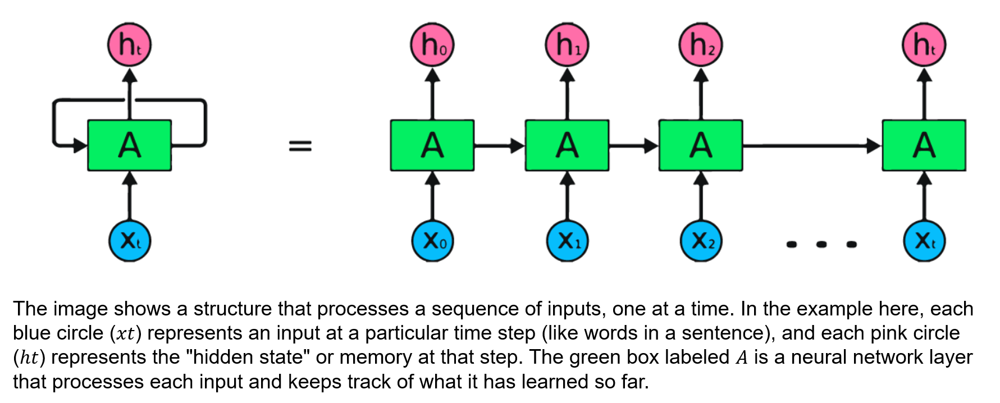
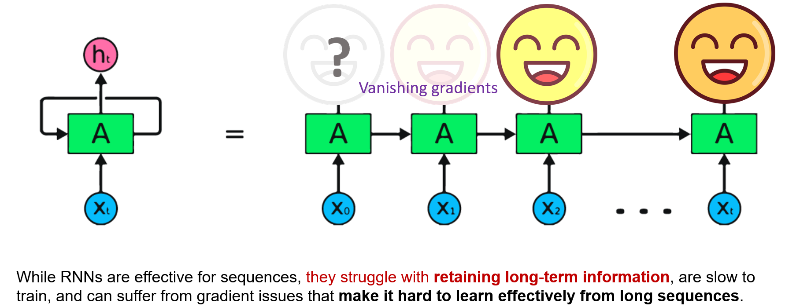

An RNN uses what came before.
A Recurrent Neural Network (RNN) works with information that comes in an order, such as words in a sentence or observations over time.
Explore the diagram: select a number to see a short explanation.

1 · Input
The blue circles are inputs arriving in order. One could represent a word in a sentence or a measurement from one day.
Watch an RNN read a sentence
Press Play to follow the process. Each step includes an explanation below the animation; pause whenever you want more time to read.
Colored strips stand for a changing numerical state, not a literal recording of the words.
One step builds on the previous step.
Think of reading a story: earlier information helps you make sense of what comes next.
Blue circles: the information arriving now.
Each blue circle represents an input at one point in the sequence. For example, it could represent a word in a sentence or a measurement from one day.
Green boxes: process the information.
The box marked A combines the new input with information passed from the previous step. The repeated boxes show the same network operating at different times.
Pink circles: the current hidden state.
The hidden state is the network’s numerical summary of information so far. You can think of it as a working memory, although it does not store every earlier word exactly.
Connecting arrows: carry information forward.
The state from one step influences the next step. This lets earlier inputs affect how the network processes later inputs.
Why does order matter?
“The bear chased Nick.”
“Nick chased the bear.”
The words are the same, but the order changes who is chasing whom. Sequence models are designed to work with ordered information.
Main idea: An RNN processes a sequence while carrying information from earlier steps.
Why might an RNN seem to forget?
Look at the smiling faces. The faces farther back are fading, illustrating the difficulty of learning to use information from much earlier in a long sequence.
Explore the diagram: select a number to see a short explanation.

1 · Recent information
The bright faces represent more recent information in this teaching illustration.
During training, the network uses feedback about its errors to adjust its connections. As that feedback travels backward through many steps, it can become very small. Then the network has difficulty learning which much-earlier information matters for the current prediction.
This can make the model seem to “forget” useful information from the beginning of a sequence. LSTMs were designed to help with these longer-range connections.
Where might you see RNNs?
Examples include language processing, speech recognition, sentiment analysis, and predicting how a pattern changes over time.
What if the sequence is very long?
A basic RNN can have difficulty learning to use information from much earlier in a sequence. LSTM is a type of RNN designed to help with this challenge.